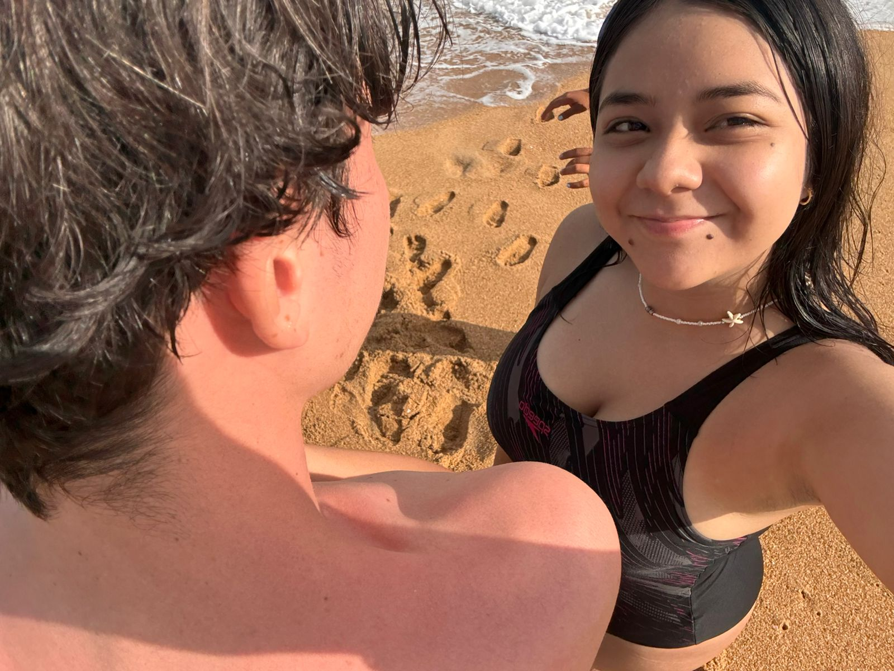
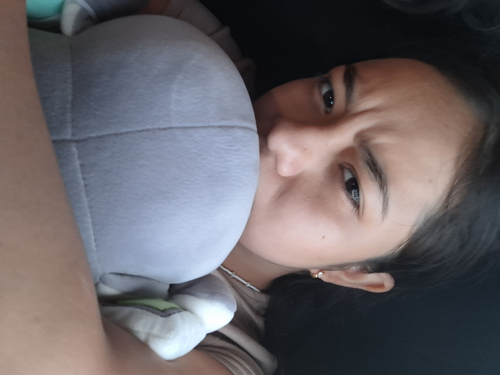
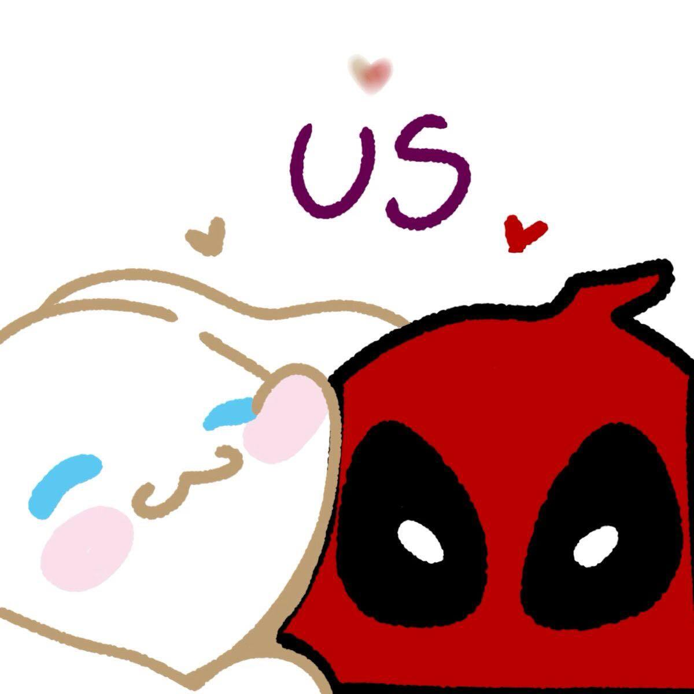
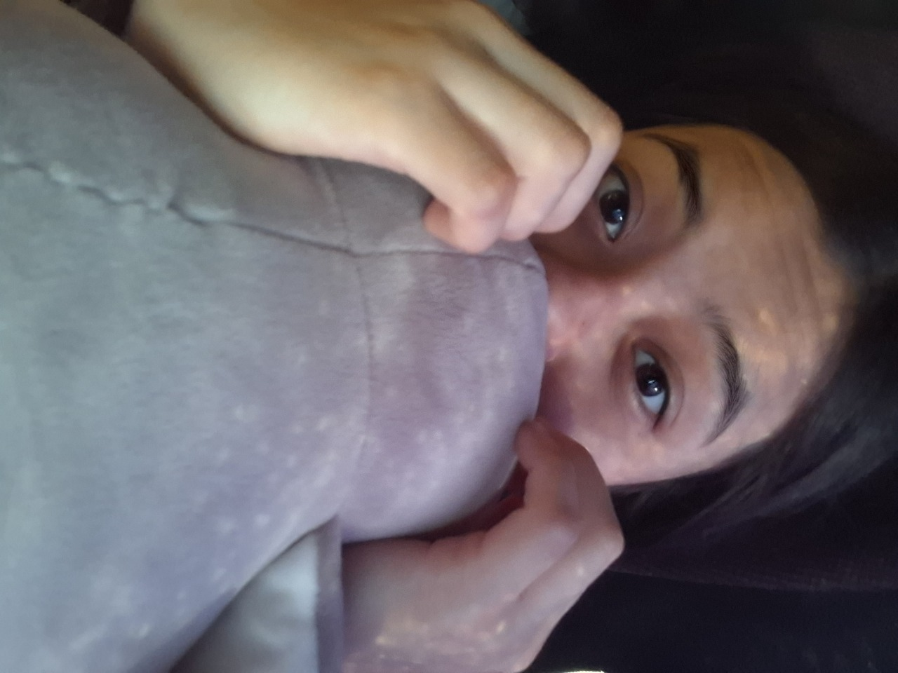
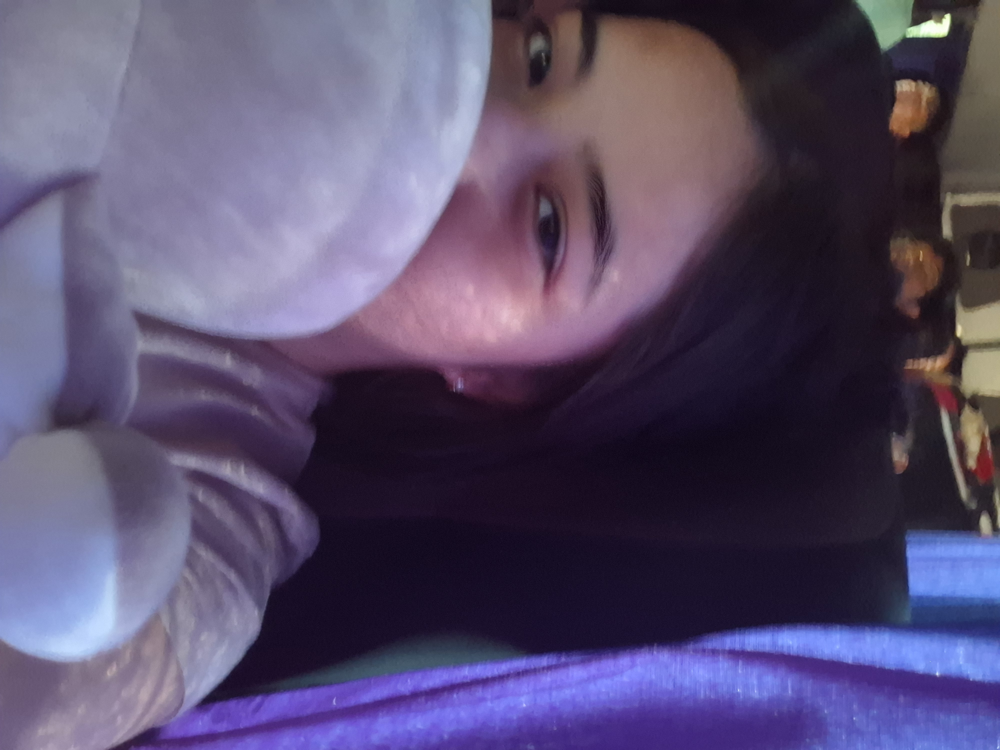

Hola hola espero puedas ver esto lo hice para ti se que no es la gran cosa pero es algo que hice con esfuerzo se que estas pasando por cosas y que no estas bien aunque me mientas espero te guste
, a falta de presupusto para darte algo mejor te hice esto, Trate de hacerlo lo mejor que pude (puede que tenga errores ortograficos sorry)👻
Claro hoy es tu cumpleaños felicades ya estas mas grande auque aun te ves mas pequeña jaja aun recuerdo muchas cosas, de las pocas fotos que tengo esta es mi foto favorita
ya que es obvio que te ves tierna pero en esta foto aun mas y a ese gato le tenia mucha envida porque el si podia estar todo el tiempo contigo, ademas desde ese entonces
sabia lo que eres y lo que seras y no solo eso podia ver esa hermosa sonrisa que tienes
Hoy cumples 20 se que has pasado por cosas que prefieres no contar, se que no ha sido facil aun si veo a una mujer fuerte pero tambien a una mujer que
apesar de lo fuerte que es tambien tiene un corazón y que en tu rostro puedo ver lo que me ocultas, escogi esta foto porque en ella se ve esa linda
sonrisa que tienes por la cual haria lo que fuera para poder verla todo el tiempo.
Eres una gran mujer: fuerte, valiente, sensible, inteligente, leal y profundamente humana. De esas que sienten mucho, pero siguen de pie; de las que caen, se sacuden el miedo y continúan, aunque nadie esté mirando.
Eres paciente cuando toca esperar, firme cuando hay que poner límites y generosa incluso cuando el mundo te ha quedado a deber.
Tienes una luz tranquila que no hace ruido, pero que se nota en la forma en que cuidas, en cómo escuchas, en cómo sigues dando aun cuando estás cansada.
No necesitas demostrar nada, porque tu historia, tus decisiones y tu manera de amar hablan por ti. Y aunque no siempre te lo digan, tu presencia deja huella, tu corazón suma y tu existencia importa más de lo que imaginas.


Aveces se no que decir o como comportarme aun asi no me juzgas contigo todo fluye se que suena raro pero es verdad, sabes que me gusta mucho deadpool y a ti
de varios personajes que te gustan esta cinnamoroll y esta imagen tu me la diste es especial porque tiene ambos personajes, para decirlo de
mejor forma como diria deadpool
Tus locuras van con mis locuras

Se que no siempre te puedo ver por x razon aun asi hay muchas cosas que me hacen recordarte como las fotos, las pulseras que llevo, las cosas que tengo de ti
pero en particular hay algo qye hace que me acuerde de ti que seria esta imagen hice y que te enseñe ya que tiene cosas que se que te gustan como snoopy,kirby,
cinnamoroll y pochaco o como yo le digo pochoco
Sé que tienes algo, es muy claro. Aunque trates de ocultarlo, para mí es muy obvio, porque cambia tu tono de voz, la forma en la que te expresas e incluso cómo contestas. Dirás que no, pero no me puedes engañar.
Sé que esa es tu forma de hacer las cosas y crees que es lo mejor, pero no siempre lo es. A veces no sé qué hacer para ayudarte, para mostrarte que siempre estaré ahí para apoyarte, incluso si solo quieres llorar… ahí estaré.
Sé el tipo de persona que eres. Sé lo fuerte que eres, pero también sé lo fuerte que a veces quieres aparentar ser por miedo. Sé que tienes muchos problemas, que no te gusta llorar, y lo respeto, pero no es algo bueno. Sé que da miedo llorar porque puede parecer debilidad, pero no es cierto. Llorar demuestra el enorme corazón que tienes, lo mucho que sientes y todo lo que eres capaz de dar.
Si pudiera quitarte todos tus problemas, todos los conflictos y todo ese peso que cargas… lo haría sin pensarlo. Haría lo que fuera por volver a ver esa linda sonrisa que tienes. Pero no puedo hacerlo. Lo que sí puedo hacer es estar contigo y ayudarte a cargar todo eso.
Esta foto es muy linda, no solo por el gesto que haces, sino porque pude darte el pingüino que llamamos Zarek. Cuando te di a Pochaco no fue solo porque te gusta, sino para que pudieras abrazarlo y dormir con él, aunque era muy grande. Pero Zarek no solo es para eso, también es para que lo abraces cuando sientas que no puedes seguir, cuando sientas que el mundo se te cae y que no hay nadie ahí.
También es para que me recuerdes… y que cuando lo abraces, sientas que estoy contigo: abrazándote, cuidándote, apoyándote, alentándote y esperándote.
Espero que aún tengas el peluche, o mejor aún, que tengas a ambos, porque los dos tienen el mismo propósito: cuidarte.
Y recuerda, cuando sientas que el mundo se cae y ya no puedes más, voltea… ahí estaré yo, alentándote. Estoy aquí para ayudarte, aunque sea solo escuchándote o abrazándote mientras lloras.


Se que al inicio dije que no tenia dinero, pero te prepare una pequeña sorpresa por tu cumpleaños no se si nos podamos ver para que lo veas
🐻❄️🕯️